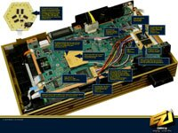
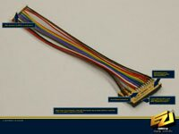
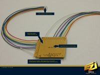
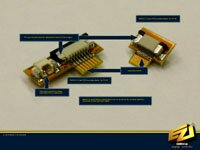

| |
News
13.12.2005
We have uploaded the official DMS flash version 0.6 which can be found in the downloads section. Changes since the last official flash release include support for DMS4 SE series chips and the V14 consoles.
6.12.2005
Diagrams for V14 systems have been added in the diagrams section.
15.11.2005
Diagrams for the European/Japanese and USA V14 systems will be added soon! In order for V14 to work with DMS4 Lite and DMS4 Pro, you must upload the flash upgrade to your memory card and perform the upgrade process using the DEV.olution 1 application. The flash upgrade will be added to the Downloads section soon.
9.11.2004
DMS forum users may have noticed a number of almost identical sounding problem reports regarding DMS4. We felt that this was highly unlikely and so began the task of unravelling the mystery. However unlikely claims are, the DMS team takes any such reports very seriously, and we have asked several forum members to forward their problematic consoles to us for testing and further investigations. Our findings were that it was their installations which had various problems, such as:
- CDVD OE wire (O) connected to wrong point on DMS4
- Broken wire to BIOS
- CDVD points shorted to ground
- Eject wire (C) trapped and broken under metal shielding
- Badly burnt flash upgrade CD's
It is also interesting to note that many of the forum members reporting problems were brand new users with 1 post, and many of them shared the SAME IP ADDRESS - now, I wonder what's going on here? :)
The DMS4 lite and pro were extensively tested on 24 different console versions before release so we can therefore be certain that the DMS4 mods are relatively bug free and are very high quality products. For more detailed information regarding our investigations please see the ongoing forum thread HERE.
We would like to remind users to take greater care with their installation, ensuring that the wires are soldered cleanly to each point and without shorts. Furthermore users should ensure that their solder connections are intact, by checking each point on the modchip and the motherboard with a multi-meter for continuity. If you do not have the skills required to do the installation, then please ask someone who has to do it for you. Otherwise you may be left with a broken console and possibly damage the modchip too.
The DMS Team take customer service seriously, we take every conceivable precaution to ensure that you get a quality product. We are sure that it's this dedication to quality which has driven our sales this season.
Users can be sure that we'll continue the pursuit of high standards and innovation.
26.11.2004
DMS Tecnologies are proud to present pictures and news of our latest Modchip developments, the DMS4 E.Z.I. and DMS4 E.Z.I. Pro. The world´s first 100% completely solderless direct boot/auto detect modchips which are intelligent and can detect their own functionality. Connection to the DSP and BIOS are achieved through micro molded precision interconnects designed and manufactured in Japan, whilst we have designed an innovative pass through adapter for the Eject signal. High qulaity and Molex connectors are used for reduced noise distortion and improved signal transmission. Over eighteen months were spent start to finish, and perhaps the E.Z.I´s best and most novel feature is the E.Z.I. panel which uses the FPGA´s intelligent logic design to verify the inetgrity of the necessary patching signals and report the status via a Green or Red LED. Of course the DMS4 E.Z.I. and E.Z.I. Pro preserve all the features of their solder installation cousins, providing amazing perfromance all in a clip on plug and play solution, which is set to the turn the scene upside down!
Enjoy the new devlopments, and look out for further innovations soon. Pictures of the DMS4 E.Z.I below, click on each thumbnail for the full size picture.
 
 
18.11.2004
We have updated the V1-V7 diagrams by removing the T point, since it is not required. We have also updated the V3 CDVD diagrams since there was a mistake. Please check your V3 installation carefully and refer to the new diagrams. A v12 (PSTwo) overview will be uploaded soon, showing the best place to position the DMS4 Lite and Pro.
6.11.2004
DMS4 installation diagrams for V12 ("PSTwo") consoles have been placed online.
3.11.2004
HDDExplorer v1.2 has been uploaded, which is compatible with the DMS4 series modchips. You can grab this in the downloads section, as well as the other DMS software which has been mirrored here so you dont need to download from the DMS3 website. I have also made DMS4 flash 0.2 available in the downloads section. This is the exact same flash which is currently shipped with DMS4 modchips, but has been made available in case in the future people wish to downgrade their flash content. Finally, as a number of people have now started to receive DMS4 chips we thought it would be a good idea to open a DMS4 discussion section in the DMS forums.
29.10.2004
We are proud to announce that the DMS4 product series has now begun shipping after having completed testing of the new PSTwo Slimline PAL and USA Editions. Expect stocks to start filtering throught to online retailers over the next few days. Enjoy the DMS4 products and look forward to continuing software support, new features and innovations.
On a related note, we are just finishing off the installation diagrams for the PSTwo models and these will be placed online at some point over the next few days.
19.10.2004
For those who are interested we have placed a video online showing a DMS4 Pro installed in
a PS2 Slimline/PS2two console, booting the PS2 homebrew application "Naplink" and the PSX
homebrew demo "The Roots". You will need the XviD codec installed to watch the video. Grab it HERE.
16.10.2004
PS2 Slimline - Breaking news!
DMS Team have had the slimline USA PS2 slimline in our hands for several days. Testing shows that our FPGA code already supports booting burned medias on the new system. Therefore the DMS4 Lite and Pro will boot burned progarms on the new PS2 by default. The Eject solder point has been removed, however we have found an alternative point which can be used to provide the functionality required by our FPGA code :) We're now working on installation diagrams and they will be online by the time our MODS hit stores early next week. Once again DMS lead the field with innovation and confirm first support for the new system. Enjoy :)
07.10.2004
In light of recent events on a certain PS2 news site we felt that we could not let their allegations unanswered. The DMS team chose our distribution partner Divineo very carefully, based on their quality of service, reputation and comprehensive stock of all product lines. We're wise enought to realise that the market requires diversity, and to acheive diversity, that means other products in the market. Divineo stock a vast range of modchip products from many vendors, and that's precisely why we chose them. We know that they're fair, honest well respected and trusted as a source by many resellers and that's why we asked them to manage our distribution. The resellers know that they have not been in any way forced to buy DMS products. Our products are offered to resellers in the same way that all others are, that's the simple truth of the matter. DMS has always sold on it's own merits, quality and innovation, which is why we remain popular today. What you're seeing now is the result of a certain individual at the news site trying to bias the individual against DMS by spreading lies and trying to convince the scene that we are "muscling" the resellers. The simple fact of the matter is that DMS has always sold because users loved the innovation we provided. They will probably love the next generation of our mod, for exactly the same reasons. DMS has always strived to bring innovation to our products, this can only be done in a marketplace where there is a dynamic evolution of the products. This is achieved by users having the choice of which product to buy, which is exactly the reason we chose Divineo. So, the allegations made by the news site are unfounded and would appear a sham for trying to fuel a childish vendetta. It is interesting that the news site avoided posting news of the DMS4 release, even though it offers exactly what their users seek, which is a modchip for the homebrew community. It would seem then that the site is more interested in spreading lies than informing the scene of real news and devlopments.
We're not interested in playing childish games, so we'll stick to what we do best, which is to make quality products which are innovative. In relation to comments about flash content, we'd just like to say that we're catering for the legal homebrew community. As with any product it can be hacked without any doubt, but we don't condone the hacking or manipulation of our flash content. However should somebody choose to hack it, there's liitle we can do to prevent this.
24.09.2004
DMS4 diagrams (Lite and Pro) online now.
24.09.2004
Launch of the DMS4 website, we welcome all visitors!
|
|
|